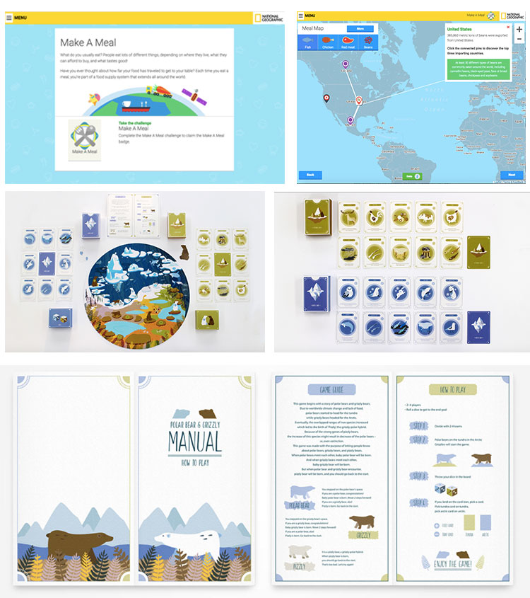
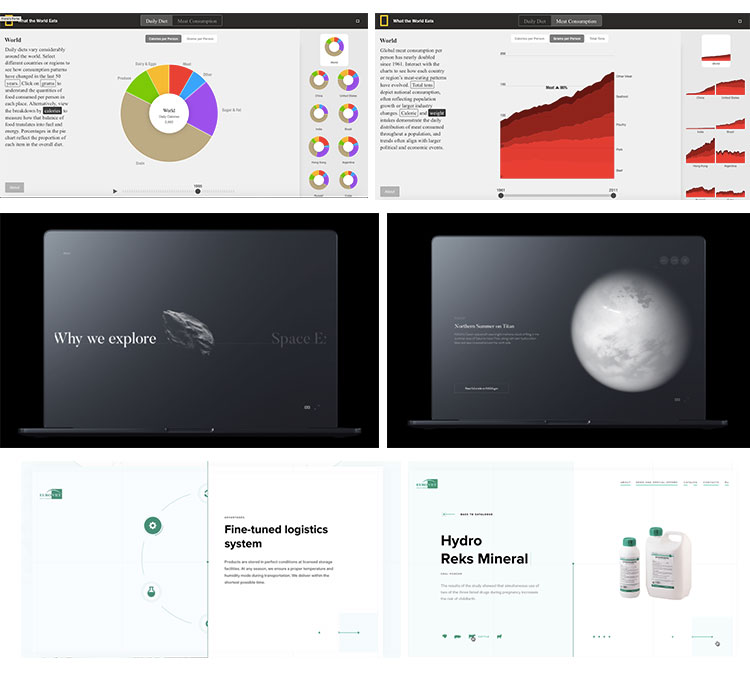

For the first moodboard, I'm taking inspiration from some interactive educational games by sites like National Geographic that target informing and education kids and teens about the environment. I really enjoy that the information has to be presented mostly visually with minimal text in order to convey a message. Since my main goal of my project is to try and impact and showcase what design is and how diverse it is as a field, it'd be best to show examples visually that way with succinct wording and text to accompany the images, which these visuals do very well.
The second moodboard that I compiled uses data visualization techniques and has a moderate amount of text to accompany the images. While I am targetting an audience of prospective college students and potential designers, I think that by providing as much information as I can can also be helpful in aiding and informing them about what design is. Because of how broad the field is, there's bound to be some overlapping, in which case text can be helpful in that way. I really enjoy how there's a combination of almost half visuals and half text in these moodboards, yet neither is compromising one or the other, even with the example of the space travel one. However, since I am planning to also showcase the works of diverse designers, depending on how citations will work for their work, I may go this route in order to showcase their works properly and be able to analyze their impact in their field properly. 